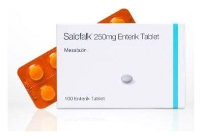

Salofalk 250 mg Enterik Tablet, 100 Adet

Ne için kullanılır
KT · Bölüm 1SALOFALK®’ın etkin maddesi bir anti-inflamatuvar ajan olan mesalazin olup, her bir tablet 250 mg mesalazin içermektedir.
SALOFALK®, açık-sarı – toprak renginde, mat düzgün yüzeyli, yuvarlak, çentiksiz enterik tablettir.
SALOFALK®, “aminosalisilik asit ve benzeri ilaçlar” diye adlandırılan ve “intestinal anti- inflamatuvar” grubuna dahil bir ilaçtır. Bu ilaçlar kalın bağırsaktaki iltihabı önler.
SALOFALK®, karton kutu içinde 100 adet enterik tabletlik blister ambalajlarda bulunur.
SALOFALK®aşağıdaki durumlarda kullanılır:
• Doktorlar tarafından ülseratif kolit olarak bilinen kalın bağırsağın (kolon) iltihaplanması ile oluşan hastalığın akut (ani başlangıçlı) ataklarının tedavisinde ve sonraki atakların (nüks) önlenmesinde,
• Crohn hastalığı olarak bilinen kronik (belirtilerin uzun sürmesi) bağırsak iltihabının akut (ani başlangıçlı) ataklarının tedavisinde kullanılır.